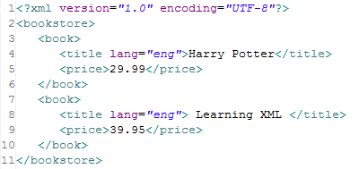
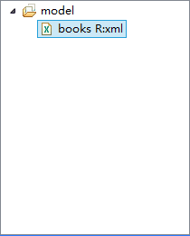
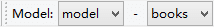
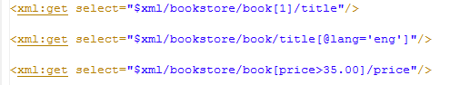
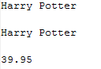
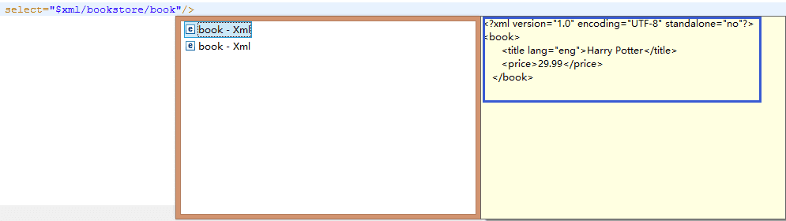
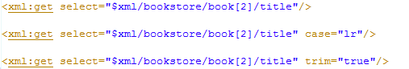
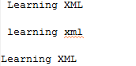

<xml:get>
Get xml variable value
Use the Xpath expression to get the value of xml
select(required) The XPath expression to get the value of xml
value(optional) Get variable value, can also get the Ognl values of the variable
valueScope(optional) The scope of the variable Property context:Get variable from context(default) session:Get variable from session
case(optional) String conversion operation, you can use "|" contains multiple operations, such as lower|plural Property lr:string to lowercase(Can also be lower) ur:string to uppercase(Can also be upper) hlr:the first string to lowercase(Can also be headLower) hur:the first string to uppercase(Can also be headUpper) lower:string to lowercase upper:string to uppercase headLower:the first string to lowercase headUpper:the first string to uppercase plural:plural form singular:singular form
trim(optional) Whether to retain the output value of the front and back blank characters Property false:yes(default) true:no(Including the newline)
In the select, use the Xpath expression to get the value of xml.
XPath is a language for finding element in xml.
This is a xml file

We transform it to model

(How to transform the xml model, please read: transform xml model)
In the template, we select this model to find the xml model
If the model group is selected, the xml tag need to specify relation
If the model is selected, the xml tag does not need to specify relation

About the usage of xml tag, please read: xml tag
We use select to output some elements, the format must begin with $.

Result

Tip: When we input in select, you can find the structure of xml.

Example: we get the value of title " Learning XML ", with spaces before and after. We do the following:

Result
